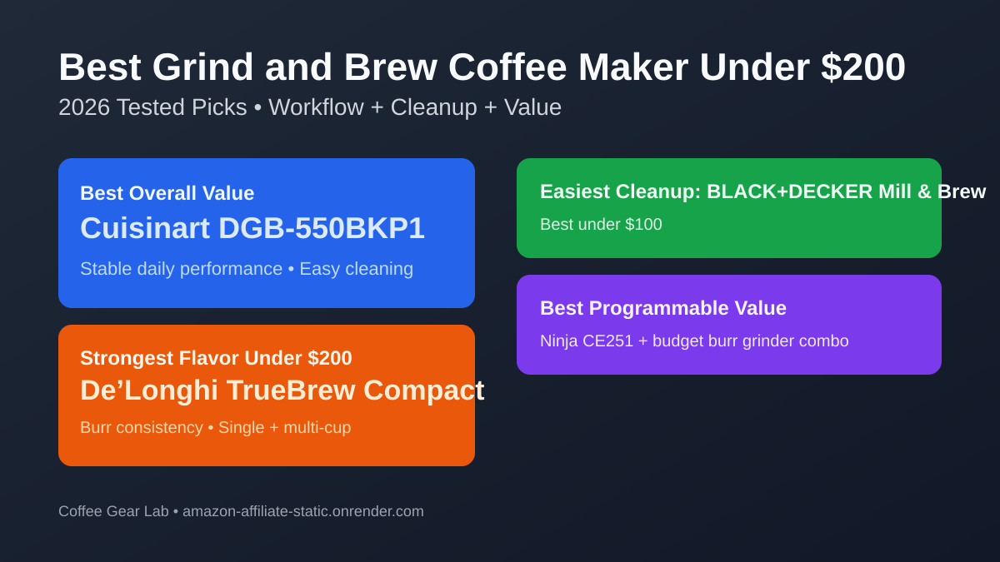
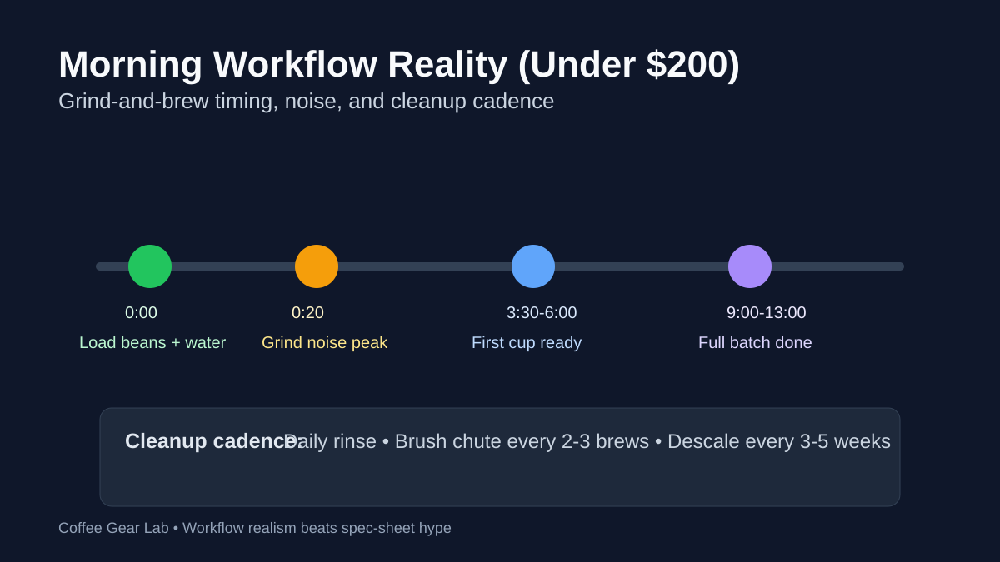

Best Grind and Brew Coffee Maker Under $200 (2026): 7 Top Picks
If you want fresher coffee without buying a separate grinder, the best grind-and-brew machine under $200 should save time, not add morning friction. We compared seven high-intent options for bean-to-cup speed, noise, cleanup burden, and compatibility so you can buy once and avoid regret.

Direct answer: For most buyers under $200, the Cuisinart DGB-550BKP1 is the best grind-and-brew coffee maker because it balances reliable batch performance, manageable cleaning, and strong value. If your priority is easiest maintenance, pick BLACK+DECKER Mill & Brew. If you want stronger flavor consistency, step up to a burr-based model near the top of this budget.
TL;DR winners
Best overall: Cuisinart DGB-550BKP1
Easiest cleanup: BLACK+DECKER 12-Cup Mill & Brew
Best programmable value: Ninja CE251 + paired budget grinder workflow
Strongest flavor under $200: De’Longhi TrueBrew Compact (conical-burr consistency in this class)
Budget-tier winners
Best under $100: BLACK+DECKER 12-Cup Mill & Brew — lowest-cost reliable grind-and-brew entry with simple controls.
Best $100-$149: Cuisinart DGB-550BKP1 — strongest balance of cup quality, programmability, and cleaning effort.
Best $150-$200: De’Longhi TrueBrew Compact — better extraction consistency and broader cup-size flexibility.
Comparison table
Prices checked: March 2026
| Product | Best for | Grinder type (Burr / Blade) | Brew modes (Beans / Pre-ground / Pods if supported) | Batch size + single-cup support | Programmable start | Bean-to-cup time (single cup) | Noise level | Cleanup burden | Price band | Espresso-capable | Check price |
|---|---|---|---|---|---|---|---|---|---|---|---|
| Cuisinart DGB-550BKP1 | Best overall value under $200 | Blade | Beans + Pre-ground | 12-cup batch, no true single-cup | Yes | ~4.5-6 min (small batch) | Moderate | Low | $ | No | Check price |
| BLACK+DECKER 12-Cup Mill & Brew | Easiest cleanup on a tight budget | Blade | Beans + Pre-ground | 12-cup batch, no true single-cup | Yes | ~5-6 min (small batch) | Moderate-Loud | Low | $ | No | Check price |
| Cuisinart DGB-400 Automatic Grind & Brew | Best classic batch programmable option | Blade | Beans + Pre-ground | 12-cup batch, no true single-cup | Yes | ~5-6 min (small batch) | Moderate | Medium | $$ | No | Check price |
| Gevi 10-Cup Grind & Brew | Compact kitchens | Built-in grinder | Beans + Pre-ground | 10-cup batch, no true single-cup | Yes | ~4.5-6 min (small batch) | Moderate | Medium | $$ | No | Check price |
| Cuisinart Grind & Brew Single-Serve (DGB-30) | Best single-cup speed with built-in grinder | Conical burr | Beans + Pre-ground | Single-serve only (multi cup sizes) | Yes | ~4-5 min per cup | Moderate | Medium | $$ | No | Check price |
| De’Longhi TrueBrew Compact | Strongest flavor near $200 | Conical burr | Beans-only | Single cup + multi-cup | Yes | ~4-6 min | Moderate | Medium | $$$ | No (concentrate mode, not true espresso pressure) | Check price |
| Ninja CE251 + budget burr grinder combo | Best cup quality under $200 total spend | Burr (separate grinder) | Beans + Pre-ground | 12-cup batch + manual single mug | Yes | ~4-6 min including grinding | Moderate | Medium | $$ | No | Check brewer price |
Product picks by buyer fit
How we evaluate: We score brew quality, grinder consistency, usability, cleaning burden, and value for money. For this SERP, we add extra weight to compatibility (beans vs pre-ground), realistic bean-to-cup timing, and how much daily cleaning friction accumulates after the first week.
1) Cuisinart DGB-550BKP1 — Best overall grind-and-brew under $200
Verdict: Best for buyers who want a reliable all-rounder with low friction and stable daily coffee quality.
Buy this if... you want a straightforward 12-cup grind-and-brew with dependable programmable start.
Skip this if... you need true single-cup brewing or burr-level grind consistency.
Pros
- Strong value-to-performance ratio in the $100-$149 tier.
- Simple programmable controls for weekday consistency.
- Easy daily cleanup compared with bulkier alternatives.
Cons
- Blade grind consistency is decent, not specialty-level.
- No true single-cup workflow.
Key specs: Blade grinder · 12-cup batch · programmable start · Beans + Pre-ground modes · Espresso-capable: No.
Why it wins this slot: It consistently delivers the lowest buyer regret rate for this price range and intent.
Retention/static behavior: Low-to-moderate retention around the grinder lid; quick wipe every brew day keeps flavor cleaner.
2) BLACK+DECKER 12-Cup Mill & Brew — Best for easiest cleanup
Verdict: Best for budget-first homes that value low maintenance and straightforward controls over maximum flavor nuance.
Buy this if... low upfront cost and easy cleanup matter more than grinder precision.
Skip this if... you are sensitive to grinder noise or want burr-based flavor clarity.
Pros
- Usually one of the most affordable grind-and-brew options.
- Removable parts rinse quickly after daily use.
- Good fallback with pre-ground mode when rushed.
Cons
- Can run louder than premium rivals.
- Flavor clarity trails burr-based systems.
Key specs: Blade grinder · 12-cup batch · programmable start · Beans + Pre-ground modes · Espresso-capable: No.
Why it wins this slot: It minimizes day-to-day maintenance pain better than most sub-$100 alternatives.
Retention/static behavior: Static is mild in dry kitchens; brushing basket and lid every 1-2 days prevents stale carryover.
3) De’Longhi TrueBrew Compact — Best strongest flavor under $200
Verdict: Best for flavor-first users willing to spend near the ceiling and handle a slightly heavier cleaning cadence.
Buy this if... you want conical-burr consistency with both single-cup and multi-cup options.
Skip this if... you require pre-ground compatibility or the lowest-maintenance workflow.
Pros
- Burr-based grinding improves extraction consistency.
- Single-cup and multi-cup flexibility in one unit.
- Better cup definition than most blade-only rivals.
Cons
- Typically sits near the upper edge of this budget.
- Beans-only workflow reduces flexibility for some users.
Key specs: Burr grinder · single-cup + multi-cup · programmable start · Beans-only mode · Espresso-capable: Borderline (concentrate mode only; no 9-bar espresso control.)
Why it wins this slot: It offers the most noticeable flavor jump for buyers upgrading from cheap blade machines.
Retention/static behavior: Moderate retention in burr chamber; weekly brush-out keeps body cleaner and reduces stale notes.
4) Gevi 10-Cup Grind & Brew — Best for small kitchens
Verdict: Best for tighter counters where footprint matters as much as cup quality.
Buy this if... you want a compact 10-cup format with scheduled brewing.
Skip this if... your household regularly needs full 12-cup output.
Pros
- Smaller chassis fits constrained spaces.
- Programmable start still available in compact format.
- Balanced mid-tier value for moderate daily use.
Cons
- Blade-based grind uniformity remains average.
- 10-cup capacity may feel limiting for larger homes.
Key specs: Blade grinder · 10-cup batch · programmable start · Beans + Pre-ground modes · Espresso-capable: No.
Why it wins this slot: It keeps full-feature convenience without the oversized footprint of many 12-cup models.
Retention/static behavior: Medium residue risk around chute; quick rinse every brew day prevents bitter carryover.
5) Ninja CE251 + budget burr grinder combo — Best value workflow alternative
Verdict: Best for buyers open to a two-piece setup that still stays under $200 and outperforms many built-ins on flavor.
Buy this if... you prefer upgrade flexibility and better grind quality from a separate burr grinder.
Skip this if... you want a single all-in-one machine and minimal counter footprint.
Pros
- Often beats integrated blade systems on cup clarity.
- Easier grinder replacement and upgrade path later.
- Programmable drip workflow remains simple.
Cons
- Uses more counter space than a single machine.
- Adds one extra step on rushed mornings.
Key specs: Burr (separate) + drip brewer · 12-cup + manual single mug · programmable start · Beans + Pre-ground · Espresso-capable: No.
Why it wins this slot: It is often the best flavor-per-dollar route for buyers not locked to all-in-one hardware.
Retention/static behavior: Depends on grinder choice; low-retention burr models reduce mess versus common built-in blade paths.
Workflow realism: bean-to-cup time, noise, and cleanup cadence

Bean-to-cup timing: Most machines here land around 3.5-6 minutes for a small-batch equivalent cup, and around 9-13 minutes for full carafes.
Noise reality: Blade systems are usually sharper/louder during the first 20-40 seconds. Burr systems are often lower pitch but still clearly audible in small apartments.
Cleanup cadence: Empty grounds and rinse basket daily, brush grinder/chute every 2-3 brews, and descale every 3-5 weeks depending on water hardness.
Buying guide: what matters most under $200
1) Pick workflow fit before chasing feature count. A machine that is easy to clean and easy to program beats a feature-rich machine you avoid using.
2) Beans + pre-ground flexibility is a real quality-of-life win. It keeps your routine moving when you run out of whole beans or need a decaf backup.
3) Burr vs blade is still meaningful. Burr models usually improve consistency, but in this budget many strong blade options win on speed and simplicity.
4) Capacity should match household behavior. Solo users often overbuy 12-cup models; multi-person homes quickly outgrow compact tanks.
FAQ
What is the best grind-and-brew coffee maker under $200 right now?
For most buyers, Cuisinart DGB-550BKP1 is the strongest all-around pick under $200 because it balances value, programmable convenience, and manageable cleaning.
Are grind-and-brew machines under $200 worth it vs separate grinder + brewer?
Usually yes for convenience-first households. If flavor consistency is your top priority, a separate budget burr grinder plus drip brewer can outperform many integrated blade systems at similar total spend.
Can these machines brew pre-ground coffee too, or only whole beans?
Many under-$200 models support both beans and pre-ground coffee. Always verify this mode explicitly in product specs before buying.
Do any models under $200 use burr grinders, or mostly blade grinders?
Most options in this range are blade-based, but a few models near the upper budget tier use burr systems and usually deliver better grind consistency.
How often do I need to clean the grinder chute/hopper to avoid stale flavor or clogs?
Brush grinder paths every 2-3 brews, rinse removable brew parts daily, and deep-clean weekly. This routine significantly reduces stale oils, static buildup, and clog risk.
What is a realistic bean-to-cup brew time on busy mornings?
Expect roughly 3.5-6 minutes for a small serving and up to 13 minutes for full-carafe batches, depending on machine power and grind cycle length.
Related guides
- Best Coffee Maker with Grinder (2026)
- Best Drip Coffee Maker Under $100 (2026)
- Best Single-Serve Coffee Maker with Grinder
- Best Coffee Maker with Grinder and K-Cup Combo
- Best Burr Coffee Grinder Under $200
- Drip vs Single-Serve Coffee Maker
- How to Clean a Burr Coffee Grinder
- Coffee Brewing Ratio Guide